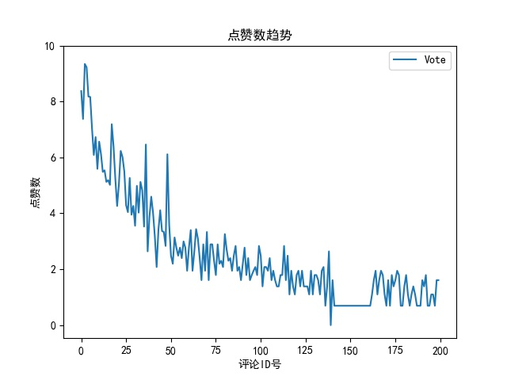

{#<!DOCTYPE html>#}
{#<html lang="en">#}
{#<head>#}
{#    <meta charset="UTF-8">#}
{#    <title>emotional analysis</title>#}
{#    <link rel="stylesheet" type="text/css" href="../static/css/analysis.css">#}
{#</head>#}
{#<body>#}
{#    <div class="div1">#}
{#        <span> 用户对电影的评分分布如图：</span>#}
{#        #}
{#    </div>#}
{#    <div class="div2">#}
{#        <span> 影迷对评论点赞趋势如图：</span>#}
{#        #}
{#    </div>#}
{#    <div class="div3">#}
{#        <span> 影迷评论的时间分布如图：</span>#}
{#        #}
{#    </div>#}
{#    <div class="div4">#}
{#        <span> 根据词频生成的词云如图：</span>#}
{#        #}
{#    </div>#}
{#    <div class="div5">#}
{#        <span> 评论的情感倾向比例如图：</span>#}
{#        #}
{#        <form method="post">#}
{#        <input type="submit" value="返回" name="back" id="back">#}
{#        </form>#}
{#    </div>#}
{##}
{#</body>#}
{#</html>#}
